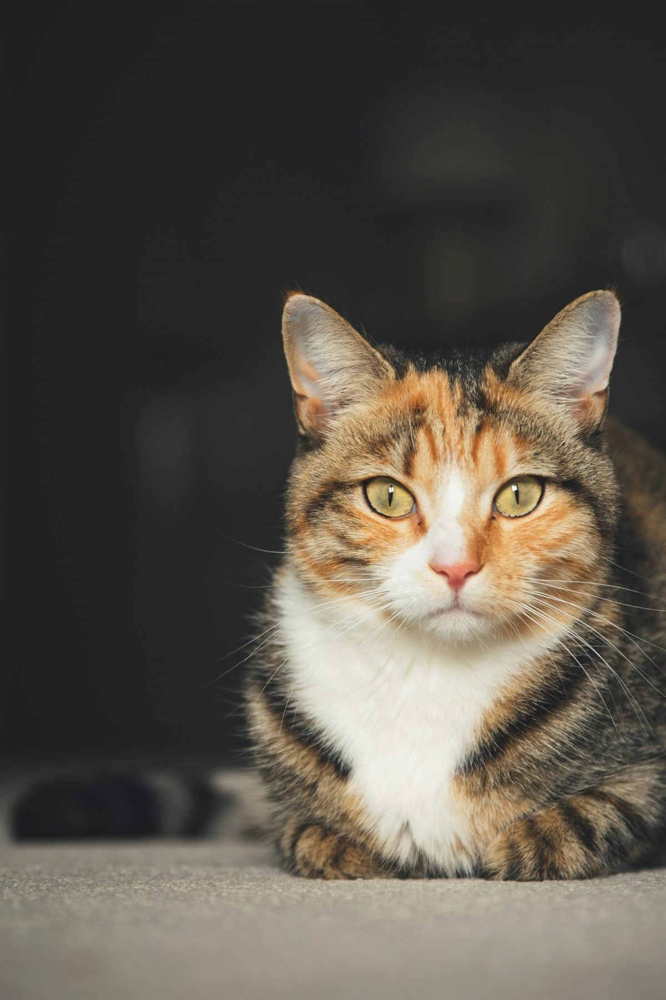
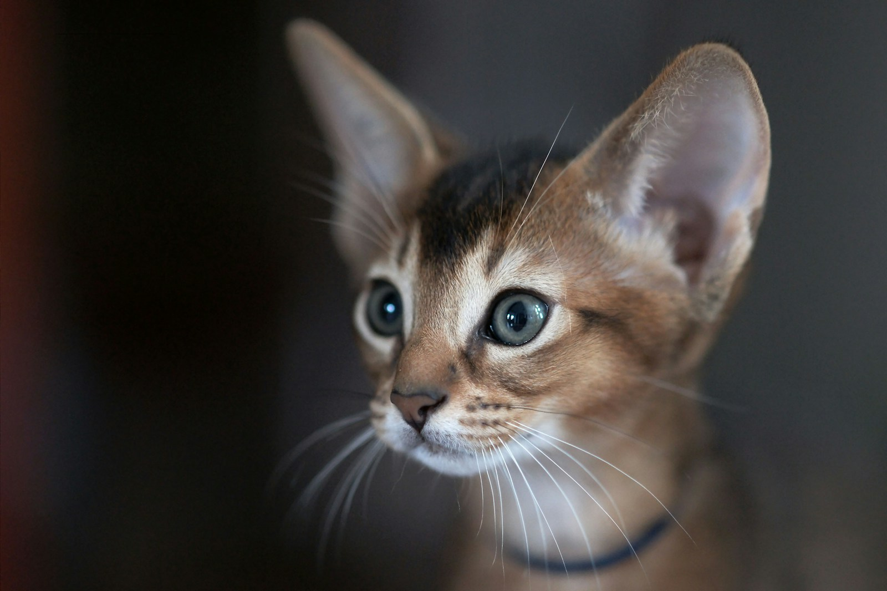

มือใหม่
24 ชั่วโมงแรกเมื่อแมวมาถึงบ้าน
คู่มือทีละขั้นตอน วันแรกที่พาน้องเข้าบ้านต้องทำอะไรบ้าง ให้ทั้งแมวและคนไม่ตื่นตระหนก
อ่านต่อสำหรับคนที่อยากเตรียมตัวก่อนรับแมวเข้าบ้าน มีบทความ เช็กลิสต์ ตัวคำนวณค่าเลี้ยง และมินิเกม


ยังไม่มีแมว แต่ใจพร้อมแล้วnakcat เป็นเว็บที่เราทำระหว่างรอวันได้พาแมวกลับบ้าน ในนี้มีเรื่องที่ควรรู้ก่อนเลี้ยง ตั้งแต่นิสัยแมวไปจนถึงการจัดบ้าน มีเช็กลิสต์ และมีมินิเกมที่ช่วยดูว่าแมวแบบไหนเข้ากับเรา ทั้งหมดเป็นสิ่งที่เราเรียนรู้ระหว่างทาง
แมวตัวหนึ่งอยู่กับเราได้ 15 ปีขึ้นไป และยังมีแมวจรอีกมากที่รอบ้าน
สิ่งที่เราจดไว้ระหว่างเตรียมตัวรับแมว
ติ๊กไปทีละข้อ เว็บจะจำไว้ให้ในเครื่องของคุณ
อ่านคู่มือ 24 ชั่วโมงแรกเมื่อแมวมาถึงบ้าน
เลือกเกรดอาหาร ทราย และของที่อยากเตรียม แล้วดูว่าต้องกันเงินไว้เดือนละประมาณเท่าไร
กระบะทราย ชาม ที่ลับเล็บ กระเป๋าใส่แมว และของเล่น ราว 2,000–4,000 บาท บวกวัคซีนชุดแรกและทำหมันอีกราว 2,000–5,000 บาท แล้วแต่คลินิก
ราคาประมาณจากร้านค้าทั่วไปในไทย ปี 2026 ของจริงต่างกันไปตามแบรนด์ ร้าน และพื้นที่
แมวโตเร็วมากในช่วง 2 ปีแรก ขวบปีแรกเทียบได้กับคนอายุราว 15 ปี ขวบที่สองราว 24 ปี หลังจากนั้นเพิ่มขึ้นประมาณปีละ 4 ปี
ตัวเลขนี้เป็นค่าประมาณ ใช้เพื่อความสนุกและเข้าใจช่วงวัยของน้อง
เลือกเกมจากแท็บข้างล่างได้เลย
ตอบ 6 ข้อตามไลฟ์สไตล์จริงของคุณ แล้วเราจะจับคู่กับแมว 22 สายพันธุ์ที่นิสัยต่างกัน
ตอบ 5 ข้อ แล้วมาดูกันว่าเจ้าเหมียวที่บ้านเป็นแมวแบบไหน
10 ข้อเท็จจริงเรื่องแมว คุณรู้จักเจ้าเหมียวดีแค่ไหน ลองทายดู!
เปิดการ์ดทีละ 2 ใบ หาแมวพันธุ์เดียวกันให้ครบ 6 คู่ ใช้จำนวนครั้งน้อยที่สุด
คิดชื่อน้องไม่ออก? เลือกหมวดที่ชอบ ทั้งหมวดอาหาร สายมู ภาษาอังกฤษ หรือกวนๆ แล้วกดสุ่มได้ไม่จำกัด เจอชื่อที่ใช่กดเก็บไว้ได้เลย
จะพูดอะไรเป็นประโยคแรก? ใส่ชื่อน้องแล้วกดปุ่ม มาฟังกันว่าเจ้าเหมียวที่บ้านอยากบอกอะไร กดซ้ำได้เรื่อยๆ ถูกใจประโยคไหนบันทึกเป็นรูปไปอวดเพื่อนได้เลย
กดปุ่มแล้วมาฟังกันว่าน้องจะพูดอะไร
กดที่การ์ดเพื่อดูนิสัยและวิธีดูแล
เรื่องขำๆ อบอุ่นๆ ของแมวที่บ้านคนอื่น และเล่าเรื่องน้องของคุณได้เหมือนกัน
เรื่องที่ทาสแมวสงสัยกันบ่อย
เป็นพฤติกรรมที่ติดมาตั้งแต่ตอนเป็นลูกแมวที่นวดท้องแม่ระหว่างกินนม แมวโตจึงมักนวดเวลารู้สึกผ่อนคลายและปลอดภัย นอกจากนี้อุ้งเท้ามีต่อมกลิ่น การนวดจึงเป็นการทิ้งกลิ่นบอกว่า "ที่นี่ของฉัน" ด้วย
กล่องเป็นที่ซ่อนที่มองเห็นรอบตัวได้แต่ไม่ถูกมองเห็นง่าย ช่วยให้แมวรู้สึกปลอดภัยและลดความเครียด ผนังกล่องยังช่วยเก็บความอุ่น ซึ่งแมวชอบมาก
แมวโตส่วนใหญ่นอนราว 12–16 ชั่วโมงต่อวัน ลูกแมวและแมวสูงวัยอาจนอนมากกว่านั้น แมวมักตื่นตัวช่วงเช้ามืดและพลบค่ำ แต่ถ้าน้องนอนมากผิดปกติร่วมกับไม่กินอาหาร ควรพาไปพบสัตวแพทย์
ส่วนใหญ่ใช่ แต่ไม่เสมอไป แมวอาจครางเพื่อปลอบตัวเองตอนเครียด เจ็บ หรือไม่สบายได้ด้วย ให้ดูภาษากายอื่นประกอบ เช่น ท่าทาง หู และการกิน
บนหัวและแก้มแมวมีต่อมกลิ่น การชนหัวหรือถูแก้มคือการทิ้งกลิ่นของตัวเองไว้ เป็นสัญญาณว่าแมวไว้ใจและนับเราเป็นพวกเดียวกัน
ห้ามให้หัวหอม กระเทียม ช็อกโกแลต องุ่นและลูกเกด และเครื่องดื่มแอลกอฮอล์ ระวังดอกลิลลี่เป็นพิเศษ เพราะทุกส่วนของต้นเป็นพิษต่อไตแมวอย่างรุนแรง และแมวโตหลายตัวย่อยนมวัวไม่ได้ ถ้าสงสัยว่าน้องกินของเป็นพิษ ให้รีบพาไปพบสัตวแพทย์ ของอันตรายอื่นในบ้าน อย่างยาของคนและน้ำมันหอมระเหย ดูได้ในบทความ บ้านที่แมวอยากอยู่
มีเรื่องแมวอยากเล่า อยากถาม หรืออยากให้เราเขียนเรื่องอะไร ส่งข้อความถึงเราได้เลย